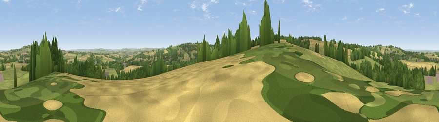

Viewpoint near Broad Campden
#13815 in England · top 29% of its area beats it · near Broad CampdenWhere it is
The exact computed spot (SP 16225 37375). Click the marker for map links.
The view, rendered

A 360° render of this exact spot computed from the terrain model, tree cover and land cover — summer colours, afternoon light, calibrated against photographs of famous viewpoints. Real trees, hedges and buildings will differ in detail.
The panorama
Grey silhouette: terrain skyline in each direction (720 bearings, Earth curvature and refraction included). Dashed green: skyline with trees (+15 m) and buildings (+8 m) as obstacles. Blue strip: how far the ground is visible on each bearing.
Where the view opens
Wedge length = distance to the farthest visible ground on that bearing (vegetation-aware). Rings at 10, 25 and 50 km.
What fills the view
40% grassland · 35% cropland · 22% woodland · 3% built-up
Angular shares of the visible panorama (visual magnitude), not map area. Landscape diversity 0.51 (0–1 Shannon).
Key numbers
More beautiful places nearby
The staircase of upgrades: each row has a higher view potential than everything closer. Driving times are estimates from straight-line distance, calibrated against real road routing — check an actual route before setting out.
| Place | Direction | Drive | Score |
|---|---|---|---|
| Dover's Hill | NW · 3 km | ~8 min | 72.4 |
| Viewpoint near Chipping Campden | NW · 4 km | ~8 min | 73.3 |
| Viewpoint near Chipping Campden | NNW · 4 km | ~9 min | 76.3 |
| Broadway Hill | WSW · 5 km | ~11 min | 77.7 |
| Viewpoint near Elmley Castle | W · 19 km | ~32 min | 80.5 |
| Nottingham Hill | WSW · 20 km | ~34 min | 80.9 |
| Bredon Hill | W · 21 km | ~35 min | 83.0 |
| Black Hill | W · 39 km | ~59 min | 83.1 |
52.03455, -1.76489 · source: screening · position refined by local search. Computed location — check access rights before visiting.